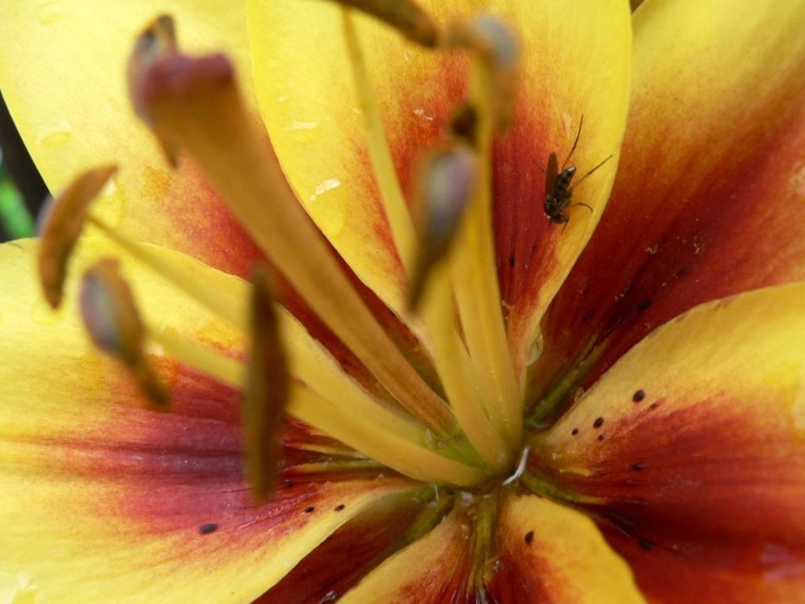
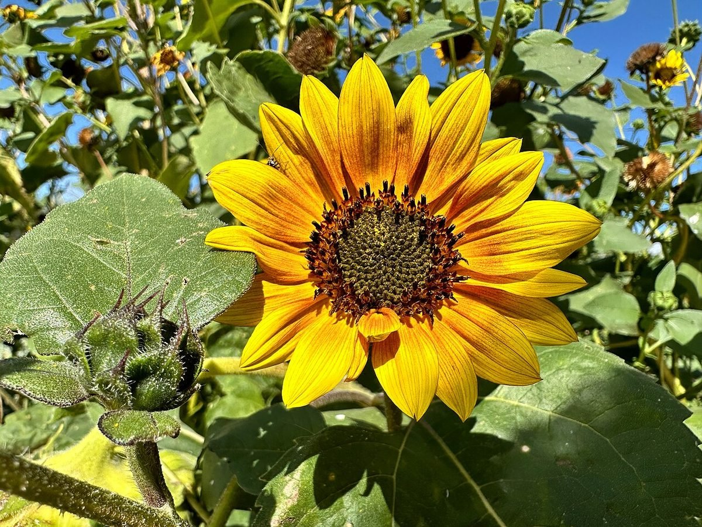

About
店のこと
確認できていること
| 屋号 | ともちゃん家のお花屋さん(花屋) |
|---|---|
| 所在地 | 〒270-2221 千葉県松戸市紙敷1073-2 |
| 電話 | なし |
| 営業時間 | 準備中 |
| 定休日 | 準備中 |
| SNS | Instagram @tomochanchi_ohana |
制作側が想像して書いた
郊外の花屋という連想
この項目は、制作側が想像して書いたものです。お店の考えや事実とは限りません。
店名と所在地から、制作側は、住宅の並ぶ静かな郊外の道を思い浮かべました。そこにある「家」のようなお店で、季節の花をそっと並べているのかもしれない、という連想です。店主の方のお名前や店の歴史、こだわりなどは分かっていないため、ここには書きません。お話を伺えたら、お店の言葉で書き直します。


制作側が想像して書いた
差し替え予定のもの
店先、花桶、季節の花、手書きの札など、実際の写真と言葉は、お店からご提供いただいたものに差し替えます。いまは何も決まっていないので、このページはあくまで枠組みです。